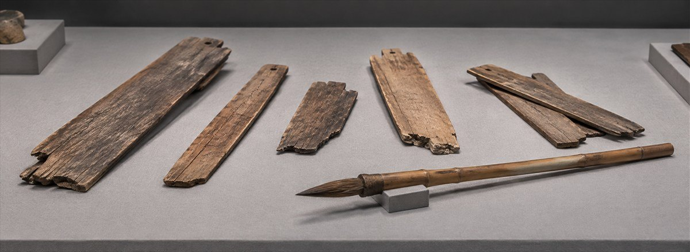
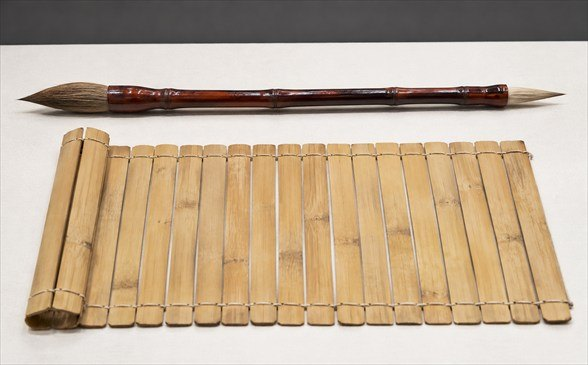
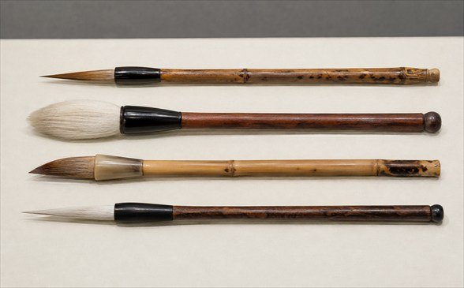

붓은 중국 신석기 시대에 처음 쓰였다고 알려져 있습니다. 문자가 생긴 무렵과 비슷한 때로 보는데, 처음에는 바위나 동굴 벽에 그림과 무늬를 새기는 데 써서 동물 뼈처럼 단단하고 뾰족한 재료로 만들었습니다.
오늘날과 비슷한 구조의 붓은 기원전 3세기 무렵의 중국 기록에 처음 등장합니다. 다만 그보다 앞선 채색 토기에도 붓으로 칠한 자국이 남아 있어, 비슷한 붓은 그 전부터 있었던 것으로 봅니다.
1988년 창원 다호리 1호 무덤 조사에서 옻칠한 나무 필관을 지닌 붓 다섯 점이 확인되었습니다. 현재 알려진 국내 초기 붓 자료 가운데 시기가 매우 이른 사례입니다.
출토된 붓은 약 23cm 길이이며, 나무로 깎은 필관 표면에는 검은 옻칠이 남아 있습니다.
필관 양끝에는 털 묶음을 바꾸어 끼울 수 있는 자리가 있고, 가운데 작은 구멍은 끈을 걸어 휴대하거나 보관하기 위한 장치로 해석됩니다.
중국 유적에서 나온 붓은 대개 한쪽 끝에만 붓촉을 끼운 모양입니다. 다호리 유물은 기원전부터 이 땅에서 붓을 만들고 사용했음을 보여 줍니다. 양쪽에 털 묶음을 끼우는 구조와 함께 글자를 긁어 지우는 칼이 발견되었습니다. 이 조합은 기원전 1세기 무렵 문자 기록이 실제 생활에서 이루어졌다는 단서가 됩니다.


고려에서 만든 황모필은 족제비 계열 털의 탄성을 살린 붓으로 알려져 있습니다. 중국의 여러 문집과 사료에 서로 다른 이름으로 등장한다는 점에서, 당시 붓이 국경을 넘어 교류된 물품이었음을 읽을 수 있습니다.
조선 시대 기록에는 붓이 관청의 필수품이자 교역품, 선물로 쓰인 정황이 반복해서 나타납니다. 수요가 커지면서 황모뿐 아니라 양모·노루 겨드랑이털·토끼털 등 쓰임에 맞춘 여러 재료가 함께 제작되었습니다.
이렇게 우리 붓은 시대의 쓰임에 맞춰 재료와 기술을 바꾸며 이어져왔고, 여러 시대를 지나 긴 세월 동안 글과 그림으로 생각을 남겨 온 도구로서 중요한 자리를 지켜 왔습니다.
옛 문헌에서는 붓의 품질을 네 가지 기준으로 설명하며, 좋은 붓의 기준을 첨·제·원·건이라는 네 기준으로 정리했습니다.